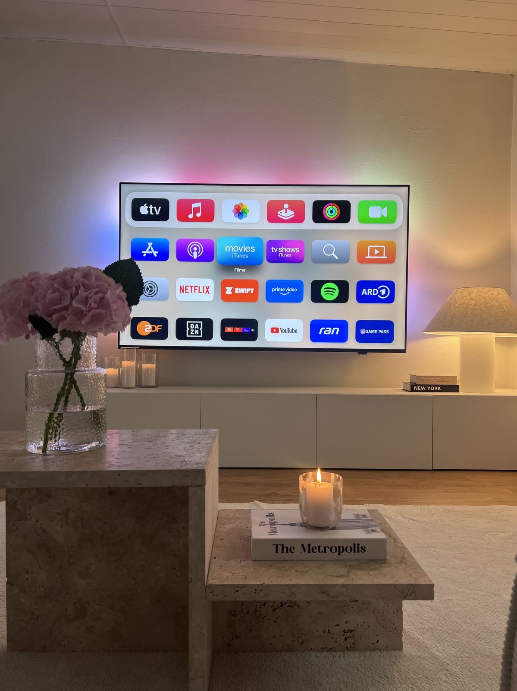
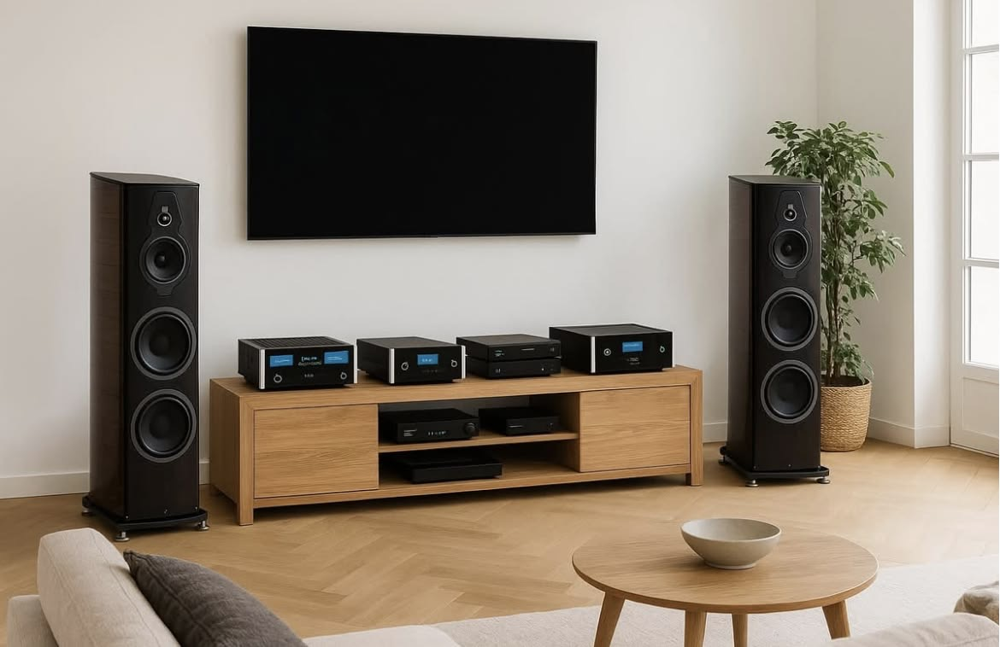
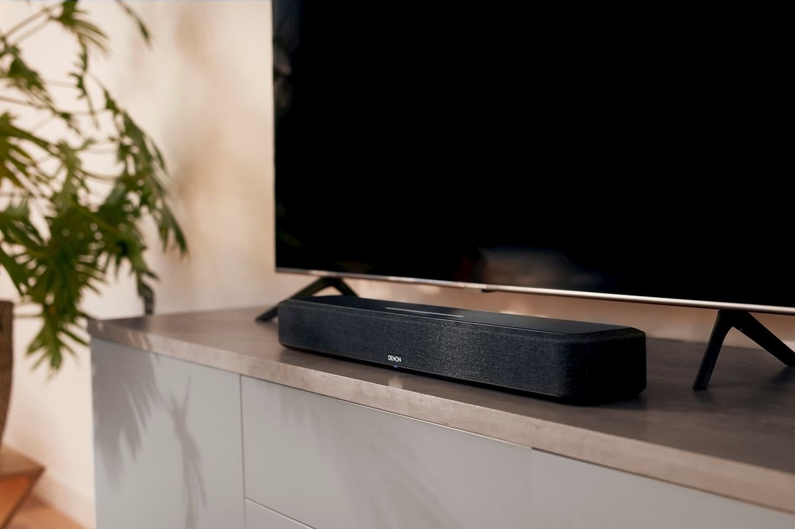
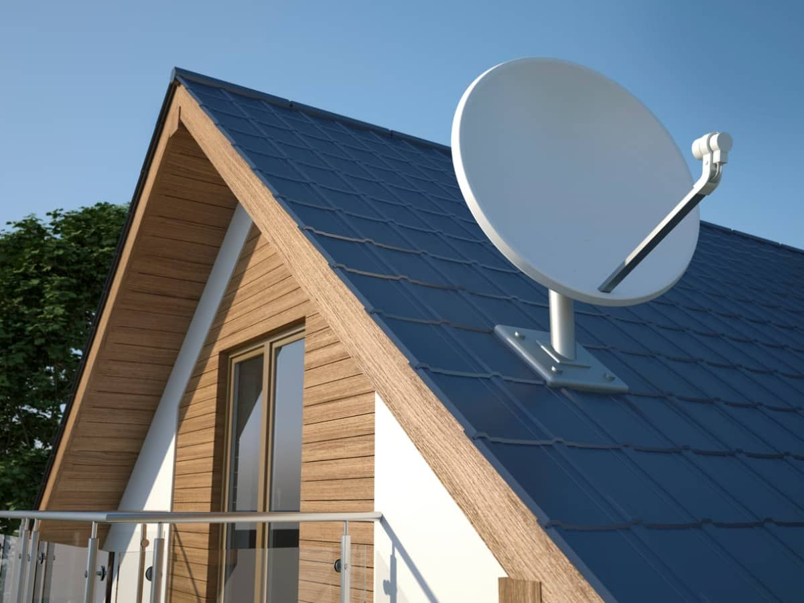

Dal segnale al salotto
Una buona serata davanti allo schermo comincia da un'antenna che prende bene e finisce con un audio che si sente come al cinema. Vendiamo televisori e impianti audio, e ci occupiamo anche della parte impiantistica che li fa funzionare davvero: antenne e parabole.

TV normali e smart
Dai modelli più semplici, pensati solo per guardare i canali, alle smart TV con accesso diretto alle app di streaming, in diverse dimensioni e tecnologie di schermo per adattarsi alla stanza e alla distanza di visione.

Impianti home cinema
Un sistema completo di diffusori posizionati in punti diversi della stanza, per ricreare a casa la sensazione di essere avvolti dal suono come al cinema. Progettiamo l'impianto in base alla forma e alla grandezza dell'ambiente.

Soundbar e subwoofer
La soluzione più semplice per migliorare l'audio della TV senza installare un impianto completo: una barra sonora da posizionare sotto lo schermo, abbinabile a un subwoofer per un bassi più pieni e avvolgenti.

Impianti SAT e antenna
Installazione e manutenzione di antenne terrestri e parabole satellitari, punto di partenza per avere un buon segnale su tutte le TV di casa. Ci occupiamo anche della sistemazione di impianti già esistenti che non funzionano più bene.